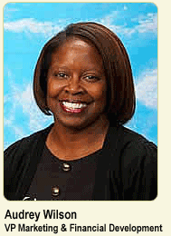

Audrey Wilson
Vice President, Marketing & Financial Development
Audrey Wilson has devoted more than 20 years of her life at Mathews-Dickey, where she currently serves as vice president of marketing & financial development.
In the summer of 1982, Wilson, a recent criminal justice graduate from the University of Missouri-St. Louis, worked at the Club through the St. Louis Agency on Training and Development (SLATE) internship program. She remained a volunteer after the program until the following January, when she was hired as a receptionist and game room monitor.
Since then, Wilson has worked in various capacities at Mathews-Dickey, including accounts payable, membership services and as a program assistant and director. Wilson says she enjoys watching the generations of Mathews-Dickey members move throughout the Club, especially when she sees former members enrolling their own children. She serves as the liaison to the United Way of Greater St. Louis, a Reach Out St. Louis resource director and oversees the day-to-day operations of the Club’s financial and membership services.
In her free time, Wilson enjoys volunteering at cultural events such as the US Bank Jazz Festival and is active in the St. Louis Christian Center.